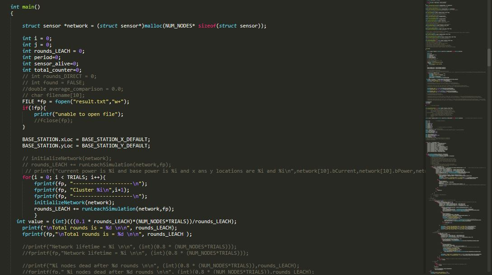

Projects
CSlab Documentation
Smartirrigation web Api
Ife tourism

Promotion tracking site(still under construction)

Modified Leach network

Name: Adewale Adeleye
Profile: Software developer
Email: adeleyea5@gmail.com
Phone: (234) 7083429144
Skill
Critical Thinking 85%I am a recent graduate of Electronic and Electrical engineering with productive work experience in writing software, setting up and managing IT Infrastructures. A detail-oriented and hardworking personnel with remarkable, analytical and logical skills, expert in performing complex operations. Able to maintain quality/standards and leverage technology to provide solutions to customers/staffs. Result driven, Innovative and Willing to Learn.
I write C and C++ projects on real time systems, networking, coding competitions,etc.
I develop websites and web applications ranging from simple projects to complex projects under the right standards.
I write matlab for projects on real time systems,i run simulations with matlab and simulink